Youtube: SQL in WPF apps
Let op! Dit al wat oudere filmpje is voor een .NET FrameWork project, niet .NET8 zoals we tegenwoordig gebruiken. Er kunnen dus kleine verschillen zijn (references worden dependencies b.v.). Volg vooral de uitleg hier op de pagina; het filmpje is enkel bedoeld als extra hulpmiddel.

- 0:00 Intro
-
4:45 DEEL 1: SlnEmployees zonder classes
- 4:45 solution en project
- 5:25 XAML code
- 6:08 Data connection, connection string in App.config
- 8:04 referentie naar System.Configuration assemly, usings
- 9:02 SELECT query - bekijken employees
- 15:51 werken met NULL waarden
- 21:21 DELETE query - verwijderen employee
- 26:19 INSERT query - toevoegen employee
- 33:57 hoofdvenster vernieuwen
- 37:03 UPDATE query - aanpassen employee
- 39:08 DEEL 2: SlnEmployees met 1 class
- 59:47 DEEL 3: SlnCompany met meerdere classes
Wat we willen bouwen
Voor dit hoofdstuk bouwen we een complete databankgestuurde applicatie, waarin we werknemers (tabel Employee) en hun jobhistoriek (tabel Job) willen bijhouden.
Databank opzetten
stap 1: nodige software installeren
Voor dit vak heb je deze software nodig:
- SQL Server Express: de databank server, download hier
- SQL Server Management Studio (SSMS): een tool om databanken te beheren, download hier
stap 2: SQL importeren in SSMS
In dit vak zul je altijd een databank aangeleverd krijgen als een SQL bestand, dat je moet importeren met SSMS via New Query → kopieer de SQL code → Execute. Importeer CompanyDB.sql:
stap 3: database bestuderen
Voor je met de WPF toepassing begint, moet je het schema (de structuur) en relaties van de gebruikte databank grondig begrijpen. In dit hoofdstuk nemen we een databank bestaande uit één enkele tabel Employee. Het schema:
schema en data
Met schema wordt het design bedoeld van de databank, zonder data.
Schema en data van de tabel Employee:
Schema en data van de tabel Job:
veldeigenschappen
Nadat je de databank geïnstalleerd hebt, bestudeer je best de eigenschappen van de kolommen (ook velden genoemd). Zo zul je opmerken dat het id veld zoals het hoort aangeduid is als Primary Key, en eveneens als Identity Column (auto increment). Voor meer uitleg hierover verwijzen we naar de cursus databanken.
Voor bepaalde kolommen zul je nog een verduidelijkende beschrijving vinden onder Properties → Description, zoals voor de getalcodes gebruikt bij gender.
check constraints
Regels die data moet volgen noemt men check constraints. Dit kan vanalles zijn: postcode moet uit 4 cijfers bestaan, een verkoop moet een geldig klantnummer bevatten enz... De constraints van de tabel Employee:
- accesscode moet tussen 1000 en 9999 liggen
- gender moet 0, 1, 2 of 9 zijn
WpfCompany aanmaken
Nieuw project
Kies als projecttype Wpf Application (dit is .NET8):
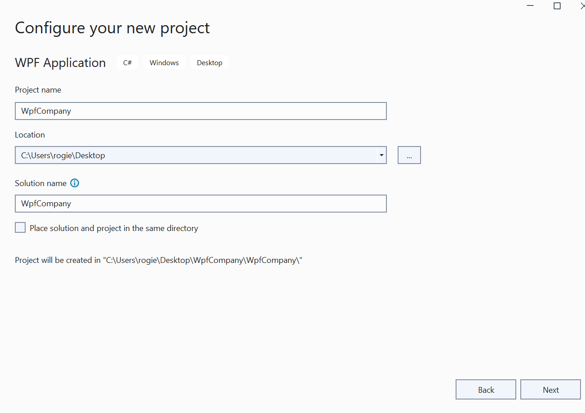
MainWindow
XAML
De XAML code van MainWindow:
<DockPanel LastChildFill="True">
<StackPanel DockPanel.Dock="Bottom" Orientation="Horizontal" HorizontalAlignment="Right" Margin="10,0">
<Button x:Name="btnEdit" Content="bewerk" Margin="10,0,10,10" IsEnabled="False" Padding="10,5" Click="BtnEdit_Click"/>
<Button x:Name="btnRemove" Content="verwijder" Margin="10,0,10,10" IsEnabled="False" Padding="10,5" Click="BtnRemove_Click"/>
<Button x:Name="btnNew" Content="nieuw..." Margin="10,0,10,10" Padding="10,5" Click="BtnNew_Click"/>
</StackPanel>
<Grid DockPanel.Dock="Right" Width="250" Margin="20,10" Background="#FFFCFAFA">
<Grid.ColumnDefinitions>
<ColumnDefinition Width="auto" />
<ColumnDefinition Width="*" />
</Grid.ColumnDefinitions>
<Grid.RowDefinitions>
<RowDefinition Height="30"/>
<RowDefinition Height="30"/>
<RowDefinition Height="30"/>
<RowDefinition Height="30"/>
<RowDefinition Height="30"/>
<RowDefinition Height="*"/>
</Grid.RowDefinitions>
<Label Content="Email" FontWeight="Bold" />
<Label Grid.Column="1" x:Name="lblEmail" />
<Label Grid.Row="1" Content="Geslacht" FontWeight="Bold" />
<Label Grid.Row="1" Grid.Column="1" x:Name="lblGender" />
<Label Grid.Row="2" Content="Geb.datum" FontWeight="Bold" />
<Label Grid.Row="2" Grid.Column="1" x:Name="lblBirthdate" />
<Label Grid.Row="3" Content="Toeg.code" FontWeight="Bold" />
<Label Grid.Row="3" Grid.Column="1" x:Name="lblCode" />
<Label Grid.Row="4" Content="Baas:" FontWeight="Bold" />
<Label Grid.Row="4" Grid.Column="1" x:Name="lblBoss" />
<Label Grid.Row="5" Content="Jobs:" FontWeight="Bold" />
<TextBlock Grid.Row="5" Grid.Column="1" x:Name="txtJobs" TextWrapping="Wrap" Margin="5" />
</Grid>
<ListBox x:Name="lbxResults" Margin="20,10,0,10" SelectionChanged="LbxResults_SelectionChanged"/>
</DockPanel>code-behind
Het skelet van MainWindow.xaml.cs:
using System;
using System.Collections.Generic;
using System.Linq;
using System.Windows;
using System.Windows.Controls;
namespace WpfCompany {
public partial class MainWindow : Window {
// methode voor weergave employees
private void ShowEmployees(int? selectedId = null) { /* TODO */ }
// button events
private void BtnEdit_Click(object sender, RoutedEventArgs e) { /* TODO */ }
private void BtnNew_Click(object sender, RoutedEventArgs e) { /* TODO */ }
private void BtnRemove_Click(object sender, RoutedEventArgs e) { /* TODO */ }
// selectie employee uit de lijst
private void LbxResults_SelectionChanged(object sender, SelectionChangedEventArgs e) { /* TODO */ }
// MainWindow() constructor; start met tonen alle employees
public MainWindow() {
InitializeComponent();
ShowEmployees();
}
}
}
EmployeeEditWindow en EmployeeNewWindow XAML
We voegen nieuwe WPF windows toe aan WpfCompany voor toevoegen en bewerken van een Employee via Add, Window (WP)...
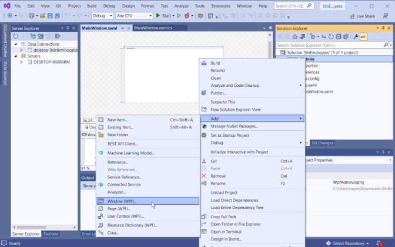
XAML
De XAML code voor EmployeeEditWindow en EmployeeNewWindow is bijna identiek. De XAML van EmployeeNewWindow:
<Grid Margin="20,20">
<Grid.ColumnDefinitions>
<ColumnDefinition Width="120" />
<ColumnDefinition />
</Grid.ColumnDefinitions>
<Grid.RowDefinitions>
<RowDefinition Height="auto" />
<RowDefinition Height="auto" />
<RowDefinition Height="auto" />
<RowDefinition Height="auto" />
<RowDefinition Height="auto" />
<RowDefinition Height="auto" />
<RowDefinition Height="auto" />
<RowDefinition Height="*" />
</Grid.RowDefinitions>
<Label Content="Voornaam *: "/>
<TextBox Grid.Column="1" x:Name="txtFirst" Margin="0,0,0,10" Padding="5" />
<Label Grid.Row="1" Content="Achternaam *: "/>
<TextBox Grid.Column="1" Grid.Row="1" x:Name="txtLast" Margin="0,0,0,10" Padding="5" />
<Label Grid.Row="2" Content="Email *: "/>
<TextBox Grid.Column="1" Grid.Row="2" x:Name="txtEmail" Margin="0,0,0,10" Padding="5" />
<Label Grid.Row="3" Content="Geslacht *: "/>
<StackPanel Grid.Column="1" Grid.Row="3">
<RadioButton GroupName="grpGender" x:Name="rbnMale" Content="man" />
<RadioButton GroupName="grpGender" x:Name="rbnFemale" Content="vrouw" />
<RadioButton GroupName="grpGender" x:Name="rbnUnknown" Content="onbekend" />
</StackPanel>
<Label Grid.Row="4" Content="Geb.datum: *"/>
<DatePicker x:Name="datBirth" Grid.Column="1" Grid.Row="4" HorizontalAlignment="Left" Margin="0,0,0,10" VerticalAlignment="Top"/>
<Label Grid.Row="5" Content="Toegangscode: *"/>
<TextBox Grid.Column="1" Grid.Row="5" x:Name="txtCode" Margin="0,0,0,10" Padding="5" HorizontalAlignment="Left" HorizontalContentAlignment="Right" Width="50" />
<Label Grid.Row="6" Content="Baas: "/>
<ComboBox Grid.Column="1" Grid.Row="6" x:Name="cmbBoss" Margin="0,0,0,10" Padding="5" HorizontalContentAlignment="Left">
<ComboBoxItem Content="selecteer..." Tag="-1" IsSelected="True"></ComboBoxItem>
</ComboBox>
<StackPanel Grid.Column="1" Grid.Row="7" Orientation="Horizontal" HorizontalAlignment="Right">
<Button x:Name="btnSave" Content="opslaan" Padding="10,5" VerticalAlignment="Bottom" Click="btnSave_Click" />
<Button x:Name="btnCancel" Content="annuleren" Margin="10,0,0,0" Padding="10,5" VerticalAlignment="Bottom" Click="btnCancel_Click" />
</StackPanel>
</Grid>code-behind
Het skelet van EmployeeEditWindow.xaml.cs en EmployeeNewWindow.xaml.cs lijkt ook sterk op elkaar:
using System;
using System.Collections.Generic;
using System.Windows;
using System.Windows.Controls;
namespace WpfCompany {
public partial class EmployeeEditWindow : Window {
// EmployeeEditWindow() constructor
public EmployeeEditWindow(int id) {
InitializeComponent();
// TODO: haal employee op en vul alle velden in
// ...
}
// button events
private void btnCancel_Click(object sender, RoutedEventArgs e) { this.Close(); }
private void btnSave_Click(object sender, RoutedEventArgs e) { /* TODO */ }
}
}
using System;
using System.Collections.Generic;
using System.Windows;
using System.Windows.Controls;
namespace WpfCompany {
public partial class EmployeeNewWindow : Window {
// EmployeeNewWindow() constructor
public EmployeeNewWindow() {
InitializeComponent();
// TODO: genereer de lijst van bazen
// ...
}
// button events
private void btnCancel_Click(object sender, RoutedEventArgs e) { this.Close(); }
private void btnSave_Click(object sender, RoutedEventArgs e) { /* TODO */ }
}
}
openen vanuit MainWindow()
Een nieuw venster openen vanuit het hoofdvenster kan via de constructor, b.v. de code om EmployeeNewWindow te openen met BtnNew_Click wordt dan:
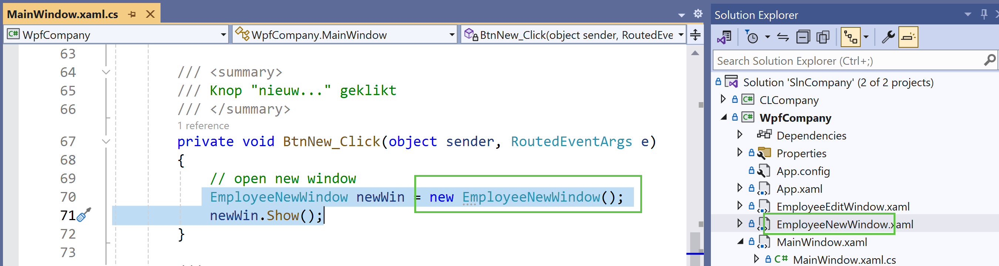
Let op: voor EmployeeEditWindow is het iets moeilijker, omdat we op één of andere manier ook de id van de te bewerken gebruiker moeten meegeven. Hoe dit gebeurt wordt beschreven in het deel Gegevens persisteren en doorgeven
Connectiestring en eerste SQL query
Stap 1: connection string genereren
Een connection string bevat de gegevens nodig om een connectie te maken: database host, tabelnaam, authenticatiegegevens...
Maak het aan via Server Explorer, Add Connection...:
In het volgende dialoogvenster kies je de server, authenticatiemethode, en dan de databank:
De gegenereerde connectiestring vind je tenslotte terug bij de connection properties:
Stap 2: connectiestring toevoegen aan App.config
Hoewel je de connectie string ook overal letterlijk in je C# code kan gebruiken, is het beter het één keer globaal te bewaren in App.config, te vinden in je project:
<configuration>
<connectionStrings>
<add name="connStr" connectionString="Data Source=(localdb)\mssqllocaldb;Initial Catalog=CompanyDB;Integrated Security=True" />
</connectionStrings>
...
</configuration>
name="...": kies hier een naam, b.v.connStrconnectionString="...": kopieer hier jouw gegenereerde connectiestring
Als App.config ontbreekt in je project, voeg het toe via Add, new Item..., Application Configuration File
Stap 3: NuGet packages toevoegen
Om deze configuratie te kunnen aanspreken en om SQL te kunnen uitvoeren, hebben we twee NuGet packages nodig: System.Configuration.ConfigurationManager en System.Data.SqlClient:
Stap 4: namespaces toevoegen
Voeg vervolgens referenties toe naar de System.Configuration en System.Data.SqlClient namespaces bovenaan elke C# pagina waar je SQL wil gebruiken, en je bent klaar om te starten:
using System;
using System.Configuration; // voeg deze toe
using System.Data.SqlClient; // voeg deze toe
using System.Windows;
using System.Windows.Controls;
namespace WpfAdmin
{
...
}Stap 5: SQL query uitvoeren
connectie openen met using
Basisschema voor het uitvoeren van SQL queries:
string connString = ConfigurationManager.ConnectionStrings["connStr"].ConnectionString;
using (SqlConnection conn = new SqlConnection(connString)) {
conn.Open();
// voer je SQL query hier uit
// ...
}Dankzij de using wordt de connectie automatisch gesloten. Dit is belangrijk, want aangezien een server maar een beperkt aantal gelijktijdige connecties toelaat, kunnen bij teveel openstaande connecties nieuwe connecties geweigerd worden en de databank onbereikbaar worden.
query uitvoeren
De exacte code voor het uitvoeren hangt af van het soort query (SELECT, UPDATE, DELETE, INSERT, stored procedure...). Hier alvast een voorbeeld voor een select query:
using (SqlConnection conn = new SqlConnection(connString)) {
// open connectie
conn.Open();
// voer SQL commando uit
SqlCommand comm = new SqlCommand("SELECT * FROM Employee", conn);
SqlDataReader reader = comm.ExecuteReader();
// lees en verwerk resultaten
while (reader.Read()) {
// lees record velden
int id = Convert.ToInt32(reader["id"]);
string firstname = Convert.ToString(reader["firstname"]);
string lastname = Convert.ToString(reader["lastname"]);
// verwerk
// ...
}
}exception handling toevoegen
Net zoals bij bestanden kunnen bij databanken onverwachte fouten optreden: de connectie kan geweigerd worden, de databank kan offline zijn… Daarom moet je bij elke databank operatie een try-catch blok gebruiken. Het vorige fragment mét try-catch:
string connString = ConfigurationManager.ConnectionStrings["connStr"].ConnectionString;
try {
using (SqlConnection conn = new SqlConnection(connString)) {
conn.Open();
// execute your SQL query here
// ...
}
} catch (SqlException ex) {
MessageBox.Show($"Fout! SQL zegt: {ex.Message}");
}
- een goed moment om exception handling toe te voegen, is in één keer op het einde, als je code bijna af is
- om de codefragmenten niet te zwaar te maken, laten we het in deze presentatie verder achterwege
connection pooling
Als je meerdere SQL instructies wil uitvoeren in de loop van je programma's, zijn er twee strategieën:
- één enkele connectie bij het begin van de eerste SQL instructie, en open houden tot na de laatste SQL instructie
- telkens bij elke SQL instructie een nieuwe connectie openen en zo snel mogelijk weer sluiten
De tweede optie is de juiste: in praktijk zal de server om tijd te winnen een aantal connecties permanent open houden zodat die snel kunnen toegewezen worden aan een programma dat die op dat moment nodig heeft. Door deze connectie zo snel mogelijk weer vrij te geven, kunnen andere databank gebruikers sneller weer aan de beurt komen. Dit heet connection pooling.
Eén connectie vroeg openen en laat sluiten is dus fout:
string connString = ConfigurationManager.ConnectionStrings["connStr"].ConnectionString;
using (SqlConnection conn = new SqlConnection(connString)) { // open in het begin
conn.Open();
// doe andere taken
// ...
// voer eerste SQL query uit
// ...
// doe andere taken
// ...
// voer tweede SQL query uit
// ...
// doe andere taken
// ...
} // sluit op het eindeOpen beter meerdere connecties zo laat mogelijk en sluit ze zo vroeg mogelijk:
string connString = ConfigurationManager.ConnectionStrings["connStr"].ConnectionString;
// doe andere taken
// ...
using (SqlConnection conn = new SqlConnection(connString)) { // open zo laat mogelijk
conn.Open();
// voer eerste SQL query uit
// ...
} // sluit zo vroeg mogelijk
// doe andere taken
// ...
using (SqlConnection conn = new SqlConnection(connString)) { // open zo laat mogelijk
conn.Open();
// voer tweede SQL query uit
// ...
} // sluit zo vroeg mogelijk
// doe andere taken
// ...Dus het advies voor connecties: open late, close early!
Class Library aanmaken
Waarom een class library
Een class library is een speciaal projecttype waar je klassen kan aanmaken. Die klassen kan je dan gebruiken in één of meerdere andere projecten (b.v. een app voor gebruikers en een app voor admins). De voordelen van het gebruik van classes en een class library in het bijzonder zijn groot:
- Minder herhaling: bv. de SQL code voor het opvragen van employee gegevens wordt zowel in MainWindow als in WinEditEmployee gebruikt; die code zou beter op één centrale plek bewaard blijven
- Lichtere code-behind: door verplaatsen van alle SQL code en andere logica van het project naar een class library maakt de overblijvende code-behind veel lichter
- Intuïtieve code: een algemeen voordeel van classes is dat de code meer aansluit bij onze leefwereld en dus leesbaarder wordt
Je kan classes uiteraard ook nog steeds in het project zelf aanmaken, maar om hergebruik bij meerdere apps mogelijk te maken zullen we ze onderbrengen een class library.
Stap 1: class library project maken
Voeg een nieuw project type Class Library toe en noem het CLCompany:

Stap 2: NuGet packages toevoegen
Vergeet niet weer de NuGet packages System.Configuration.ConfigurationManager en System.Data.SqlClient toe te voegen aan dit nieuw project:
Stap 3: klassen Employee en Job in class library maken
Vervolgens voegen we de classes Employee en Job toe:
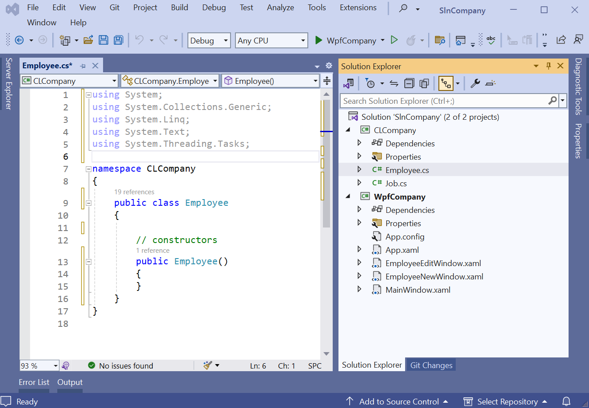
- voor het gemak kiezen we voor de class dezelfde naam als de tabelnaam in de databank
- kies class-namen altijd enkelvoud, dus niet Employees maar Employee; ze beschrijven een object, geen verzameling
- verander de zichtbaarheid van internal (enkel beschikbaar in de library) naar public (overal beschikbaar)
Klassen uitwerken
De volgende stap is onze klassen uitwerken.
basisstructuren klassen Employee en Job
public enum GenderType { Onbekend, Man, Vrouw, Nvt = 9 } // enumeratie voor gender types
public class Employee
{
// variabelen
private static string connString = ConfigurationManager.ConnectionStrings["connStr"].ConnectionString;
// properties
public int Id { get; set; }
public string FirstName { get; set; }
public string LastName { get; set; }
public string Email { get; set; }
public GenderType Gender { get; set; }
public DateTime BirthDate { get; set; }
public int? AccessCode { get; set; } // nullable field → nullable property
public int? BossId { get; set; } // nullable field → nullable property
// constructors
public Employee() { }
// database methoden
public static List<Employee> GetAll() { /* TODO */}
public static Employee GetById(int empId) { /* TODO */}
public void DeleteFromDb() { /* TODO */}
public int InsertInDb() { /* TODO */}
public void UpdateInDb() { /* TODO */}
// override ToString
public override string ToString() { return $"{FirstName} {LastName}"; }
}public class Job
{
// variabelen
private static string connString = ConfigurationManager.ConnectionStrings["connStr"].ConnectionString;
// properties
public int Id { get; set; }
public DateTime StartDate { get; set; }
public DateTime? EndDate { get; set; } // nullable field → nullable property
public string JobTitle { get; set; }
public int EmployeeId { get; set; }
// constructors
public Job() { }
// database methoden
public void DeleteFromDb() { /* TODO */}
public int InsertToDb() { /* TODO */}
public void UpdateInDb() { /* TODO */}
// override ToString
public override string ToString() { return JobTitle; }
}
Opmerkingen:
- de properties komen overeen met de tabelvelden; let op dat nullable velden ook nullable properties hebben
-
let bij de database methoden heel goed op het onderscheid tussen static en non-static:
static: gebeurt op de klasse, b.v. alle oplijsten, zoeken op basis van een id...
non-static: gebeurt op een specifiek object, b.v. toevoegen, verwijderen... - voorzie best altijd een eigen
ToString()override
Aggregaties
We hebben het in een eerder hoofdstuk reeds over aggregatie gehad: het gebruik van classes in classes.
Als we naar de tabellen Employee en Job kijken, zijn er twee aggregaties:
- elke
Employeekan 0 of meerJobs hebben - elke
Employeekan hooguit 1Employeeals baas hebben
Schematisch (diagram gegenereer in SSMS):
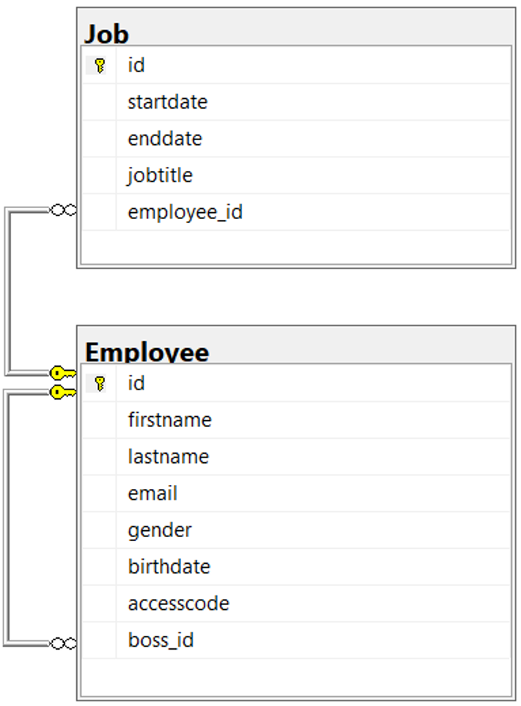
In de toepassing zijn deze koppelingen op verschillende plaatsen zichtbaar:
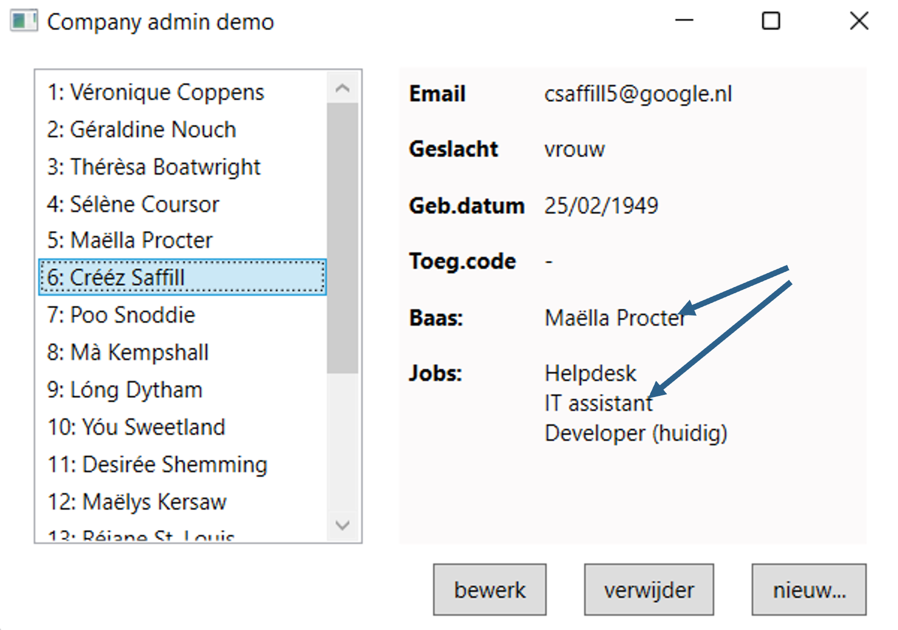
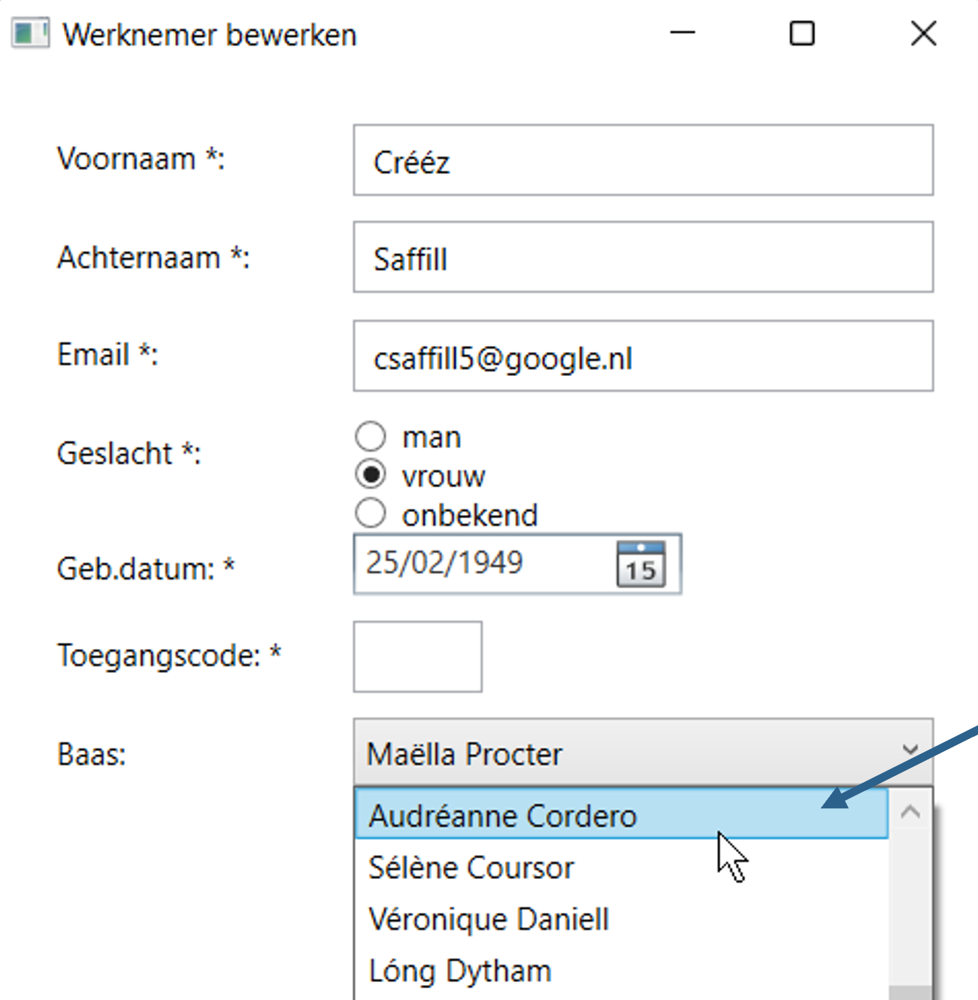
In code implementeer je deze aggregaties best als read-only properties Employee.Boss en Employee.Jobs:
public class Employee {
...
public Employee Boss {
get {
return BossId == null ? null : Employee.GetById((int)BossId);
}
}
public List<Job> Jobs {
get {
List<Job> jobs = new List<Job>();
// voer een SELECT query uit om alle jobs van deze employee op te vragen
// ...
return jobs;
}
}
...
}
SELECT queries
voorbeeld 1: ophalen employees
We beginnen met de SELECT queries. Code voor de Employee.GetAll() methode:
public static List<Employee> GetAll() {
List<Employee> emps = new List<Employee>();
using (SqlConnection conn = new SqlConnection(connString)) {
// open connectie
conn.Open();
// voer SQL commando uit
SqlCommand comm = new SqlCommand("SELECT * FROM Employee", conn);
SqlDataReader reader = comm.ExecuteReader();
// lees en verwerk resultaten
while (reader.Read()) emps.Add(new Employee() {
Id = Convert.ToInt32(reader["id"]),
FirstName = Convert.ToString(reader["firstname"]),
LastName = Convert.ToString(reader["lastname"]),
Email = Convert.ToString(reader["email"]),
Gender = (GenderType)Convert.ToInt32(reader["gender"]),
BirthDate = Convert.ToDateTime(reader["birthdate"]),
AccessCode = reader["accesscode"] == DBNull.Value ? null : (int?)Convert.ToInt32(reader["accesscode"]),
BossId = reader["boss_id"] == DBNull.Value ? null : (int?)Convert.ToInt32(reader["boss_id"])
});
}
return emps;
}
- ExecuteReader(): geeft een
SqlDataReaderinstantie terug waarmee je over de resultaten kan itereren - Read(): leest het volgende resultaat uit de reader (
nullindien geen meer beschikbaar) - merk op dat nullable velden een DBNull.Value teruggeven, geen
null, waardoor de ternaire operator nodig is - merk ook op dat de reader typeloze waarden teruggeeft; je moet ze dus nog converteren met
Convert.To...()
voorbeeld 2: employee details opvragen
Code voor de Employee.GetById(int empId) methode:
public static Employee GetById(int empId) {
using (SqlConnection conn = new SqlConnection(connString)) {
// open connectie
conn.Open();
// voer SQL commando uit
SqlCommand comm = new SqlCommand("SELECT * FROM Employee WHERE ID = @parID", conn);
comm.Parameters.AddWithValue("@parID", empId);
SqlDataReader reader = comm.ExecuteReader();
// lees en verwerk resultaten
if (!reader.Read()) return null;
return new Employee() {
Id = Convert.ToInt32(reader["id"]),
FirstName = Convert.ToString(reader["firstname"]),
LastName = Convert.ToString(reader["lastname"]),
Email = Convert.ToString(reader["email"]),
Gender = (GenderType)Convert.ToInt32(reader["gender"]),
BirthDate = Convert.ToDateTime(reader["birthdate"]),
AccessCode = reader["accesscode"] == DBNull.Value ? null : (int?)Convert.ToInt32(reader["accesscode"]),
BossId = reader["boss_id"] == DBNull.Value ? null : (int?)Convert.ToInt32(reader["boss_id"])
};
}
}
- merk op: we lezen maar één record (de employee)
data reader
ExecuteReader() is geen lijst of array, maar een data reader, i.e. een pointer, waarvan met Read() telkens het volgende record ingelezen wordt. Als er geen (meer) zijn krijg je een null terug.
SqlDataReader reader = comm.ExecuteReader();
while (reader.Read() != null) { // of gewoon while (reader.Read()) {
...
}
Je hoeft overigens geen lus te gebruiken: als je maar één record verwacht, kan het ook als volgt:
SqlDataReader reader = comm.ExecuteReader();
reader.Read();
if (reader != null) ...
De databank geeft typeloze waarden terug; je moet ze dus nog converteren:
SqlDataReader reader = comm.ExecuteReader();
reader.Read();
string email = Convert.ToString(reader["email"]); // converteer naar string
int gender = Convert.ToInt32(reader["gender"]); // converteer naar int
DateTime birthdate = Convert.ToDateTime(reader["birthdate"]); // converteer naar DateTime
...
DBNull.Value
Bij velden die NULL's kunnen bevatten, moet je in C# nullable types gebruiken:
// int? is int + null
int? accesscode = reader["accesscode"] == DBNull.Value ? null : (int?) Convert.ToInt32(reader["accesscode"]);
Let op dat de reader geen null gebruikt, maar DBNull.Value. Je moet dus expliciet nulls omzetten van en naar DBNull.Value.
Voor het schrijven naar de databank krijg je dan typisch zoiets:
comm.Parameters.AddWithValue("@par6", AccessCode == null ? DBNull.Value : AccessCode);named parameters
In theorie had je de tweede query ook als volgt kunnen samenstellen:
SqlCommand comm = new SqlCommand($"SELECT * FROM Employee WHERE ID = {employeeId}", conn);
Dit is zeer onveilig en vatbaar voor SQL injectie (lees meer hier)! Maak daarom altijd gebruik van named parameters:
SqlCommand comm = new SqlCommand("SELECT * FROM Employee WHERE ID = @parID", conn);
comm.Parameters.AddWithValue("@parID", employeeId); // named parameter @parID
DELETE query
voorbeeld 3: verwijderen employee
De DELETE syntax is eenvoudig. Code voor Employee.DeleteFromDb(). Het enige waar je op moet letten bij het verwijderen van data,
is dat je eerst ook alle gekoppede gegevens verwijdert, zodat je in praktijk hier drie DELETE queries nodig hebt:
public void DeleteFromDb() {
// verwijder gerelateerde jobs
using (SqlConnection conn = new SqlConnection(connString)) {
conn.Open();
SqlCommand comm = new SqlCommand("DELETE FROM Job WHERE employee_id = @parID", conn);
comm.Parameters.AddWithValue("@parID", Id);
comm.ExecuteNonQuery();
}
// zet eventuele ondergeschikten zonder baas
using (SqlConnection conn = new SqlConnection(connString)) {
conn.Open();
SqlCommand comm = new SqlCommand("UPDATE Employee SET boss_id = @par1 WHERE boss_id=@parID", conn);
comm.Parameters.AddWithValue("@par1", DBNull.Value);
comm.Parameters.AddWithValue("@parID", Id);
comm.ExecuteNonQuery();
}
// verwijder tenslotte de werknemer zelf
using (SqlConnection conn = new SqlConnection(connString)) {
conn.Open();
SqlCommand comm = new SqlCommand("DELETE FROM Employee WHERE ID = @parID", conn);
comm.Parameters.AddWithValue("@parID", Id);
comm.ExecuteNonQuery();
}
}
- ExecuteNonQuery(): voer de query uit zonder iets terug te geven
INSERT query
voorbeeld 4: toevoegen employee
Code voor Employee.InsertInDb():
public int InsertInDb() {
using (SqlConnection conn = new SqlConnection(connString)) {
// open connectie
conn.Open();
// voer SQL commando uit
SqlCommand comm = new SqlCommand(@"
INSERT INTO Employee(firstname,lastname,email,gender,birthdate,accesscode,boss_id)
output INSERTED.ID VALUES(@par1,@par2,@par3,@par4,@par5,@par6,@par7)", conn);
comm.Parameters.AddWithValue("@par1", FirstName);
comm.Parameters.AddWithValue("@par2", LastName);
comm.Parameters.AddWithValue("@par3", Email);
comm.Parameters.AddWithValue("@par4", Gender);
comm.Parameters.AddWithValue("@par5", BirthDate);
comm.Parameters.AddWithValue("@par6", AccessCode == null ? DBNull.Value: AccessCode);
comm.Parameters.AddWithValue("@par7", BossId == null ? DBNull.Value : BossId);
// return de id van het nieuwe record
Id = (int)comm.ExecuteScalar();
return Id;
}
}
- ExecuteScalar(): voer een query uit en geef een getal terug (i.e. id van ingevoegde record)
UPDATE query
voorbeeld 5: bewerken employee
Code voor Employee.UPdateInDb():
public void UpdateInDb() {
using (SqlConnection conn = new SqlConnection(connString)) {
// open connectie
conn.Open();
// voer SQL commando uit
SqlCommand comm = new SqlCommand(
@"UPDATE Employee
SET firstname=@par1,lastname=@par2,email=@par3,gender=@par4,birthdate=@par5,accesscode=@par6,boss_id=@par7
WHERE ID = @parID" , conn);
comm.Parameters.AddWithValue("@par1", FirstName);
comm.Parameters.AddWithValue("@par2", LastName);
comm.Parameters.AddWithValue("@par3", Email);
comm.Parameters.AddWithValue("@par4", Gender);
comm.Parameters.AddWithValue("@par5", BirthDate);
comm.Parameters.AddWithValue("@par6", AccessCode == null ? DBNull.Value : AccessCode);
comm.Parameters.AddWithValue("@par7", BossId == null ? DBNull.Value : BossId);
comm.Parameters.AddWithValue("@parID", Id);
comm.ExecuteNonQuery();
}
}
- gebruik ExecuteNonQuery() (enkel uitvoeren, niks teruggeven)
Optioneel: views en stored procedures
Voor wie vertrouwd is met database views en stored procedures en daar gebruik van wil maken in WPF, hier een paar codevoorbeelden.
Views
De code voor het ophalen van gegevens uit een view is identiek aan een normale SELECT query. Veronderstel een view vwEmployeesSimple:
string connString = ConfigurationManager.ConnectionStrings["connStr"].ConnectionString;
using (SqlConnection conn = new SqlConnection(connString)) {
conn.Open();
SqlCommand comm = new SqlCommand("SELECT * FROM vwEmployeesSimple", conn); // view in plaats van tabel
SqlDataReader reader = comm.ExecuteReader();
lbxResults.Items.Clear();
while (reader.Read()) {
int id = Convert.ToInt32(reader["ID"]);
string name = Convert.ToString(reader["name"]);
string tel = Convert.ToString(reader["telephone"]);
lbxResults.Items.Add($"{id}: {name} ({tel})");
}
}
Stored procedures
De code verschilt lichtjes naargelang de stored procedure een returnwaarde heeft of niet.
Voorbeeld zonder return, stored procedure spAddEmployee met parameters @fn, @ln en @email:
string connString = ConfigurationManager.ConnectionStrings["connStr"].ConnectionString;
using (SqlConnection conn = new SqlConnection(connString)) {
conn.Open();
SqlCommand comm = new SqlCommand("spAddEmployee", conn);
comm.CommandType = CommandType.StoredProcedure;
SqlParameter param1 = new SqlParameter("@fn", SqlDbType.VarChar);
SqlParameter param2 = new SqlParameter("@ln", SqlDbType.VarChar);
SqlParameter param3 = new SqlParameter("@email", SqlDbType.VarChar);
param1.Value = txtFirst.Text;
param2.Value = txtLast.Text;
param3.Value = txtEmail.Text;
comm.Parameters.Add(param1);
comm.Parameters.Add(param2);
comm.Parameters.Add(param3);
comm.ExecuteNonQuery(); // zonder return: gebruik ExecuteNonQuery()
}- duid aan dat het om een stored procedure gaat met comm.CommandType
- vul waarden voor de parameters van de stored procedure in met SqlParameter
- gebruik ExecuteNonQuery() als de stored procedure geen return heeft
Voorbeeld met return, stored procedure spSearchEmployee, die een lijst employees teruggeeft op basis van parameters @parSearch en @parLimit:
string connString = ConfigurationManager.ConnectionStrings["connStr"].ConnectionString;
using (SqlConnection conn = new SqlConnection(connString)) {
conn.Open();
SqlCommand comm = new SqlCommand("spSearchEmployee", conn);
comm.CommandType = CommandType.StoredProcedure;
SqlParameter parSearch = new SqlParameter("@parSearch", SqlDbType.NVarChar);
SqlParameter parLimit = new SqlParameter("@parLimit", SqlDbType.Int);
parSearch.Value = "An";
parLimit.Value = 3;
comm.Parameters.Add(parSearch);
comm.Parameters.Add(parLimit);
SqlDataReader reader = comm.ExecuteReader(); // met return: gebruik ExecuteReader()
while (reader.Read()) {
// do something with the found employees
}
}
- gebruik ExecuteReader() als de stored procedure een return heeft
Gegevens persisteren en doorgeven
bewaren in de Tag property
De Tag property van WPF controls is ideaal om de id van de gerelateerde records te onthouden:
ListBoxItem item = new ListBoxItem();
...
item.Tag = id; // onthoud de id in de ListBoxItem
lbxResults.Items.Add(item);
Bij selectie van een control kan je de id dan weer opvragen uit de Tag property:
ListBoxItem item = (ListBoxItem)lbxResults.SelectedItem;
int employeeId = Convert.ToInt32(item.Tag); // vraag de id weer op
...
doorgeven via de Window constructor
Bij het openen van EmployeeEditWindow geven we de id van de employee mee aan de constructor:
private void BtnEdit_Click(object sender, RoutedEventArgs e) {
...
EmployeeEditWindow editWin = new EmployeeEditWindow(employeeId);
editWin.Show();
}
In EmployeeEditWindow.xaml.cs vangen we dit weer op in de constructor, en bewaren we het in een globale variabele employeeId:
public partial class EmployeeEditWindow : Window {
int employeeId;
public EmployeeEditWindow(int id) {
InitializeComponent();
employeeId = id;
}
...
}
Je kan via de Window constructor vanalles meegeven, zelfs een referentie naar het hoofdvenster zelf, en bijvoorbeeld een methode van het hoofdvenster uitvoeren vanuit een popup. Codevoorbeeld:
public partial class MainWindow : Window {
public void Test() { }
public MainWindow() {
InitializeComponent();
SomeWindow win = new SomeWindow(this); // geef referentie naar dit venster mee
}
}
public partial class SomeWindow : Window {
public SomeWindow(MainWindow mainWin, int nr) {
InitializeComponent();
mainWin.Test(); // roep een methode op van MainWindow()
}
}
Via App.config
Er zijn veel manieren om te communiceren tussen vensters. Algemene configuratieparameters voor je project kan je definiëren in App.config:
<configuration>
<appSettings>
<add key="someKey" value="ABC123" />
</appSettings>
...
</configuration>
Oproepen vanuit je C# code:
string someKey = ConfigurationManager.AppSettings["someKey"];Via Application.Current.Properties
Je kan ook gegevens over alle vensters heen onthouden in de Application.Current.Properties dictionary (een soort cookies maar dan voor WPF zeg maar):
Application.Current.Properties["someKey"] = "ABC123"; string someKey = Application.Current.Properties["someKey"].ToString();→ wees hier zuinig mee; voor gegevens die voor √©√©n enkel ander venster bedoeld zijn gebruik je beter de constructor parameters (zie eerder)
Via Application.Current.MainWindow
Via Application.Current.MainWindow kan je aan het hoofdvenster en alle publieke properties en methodes, zoals we in de Edit- en New windows gedaan hebben:
((MainWindow)Application.Current.MainWindow).ShowEmployees(employeeId);Met "hoofdvenster" wordt het venster bedoeld waarmee de app opgestart is, zoals vastgelegd in App.xaml:
<Application x:Class="WpfAdmin.App" ... StartupUri="MainWindow.xaml">
...
</Application>Gebruik class library in WpfCompany
Stap 1: referentie naar class library toevoegen in project
Om je class library te kunnen gebruiken in WpfCompany, voeg je een een referentie toe naar CLCompany:
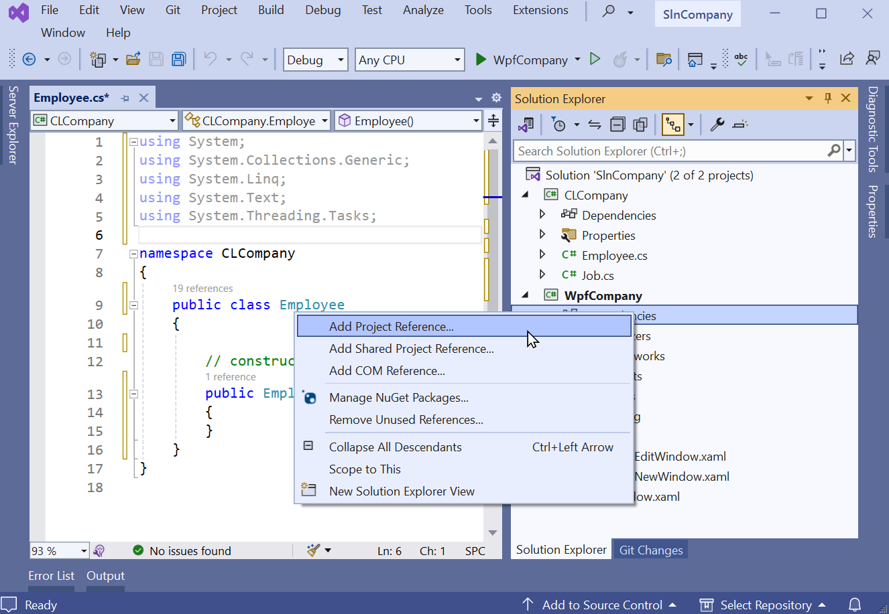
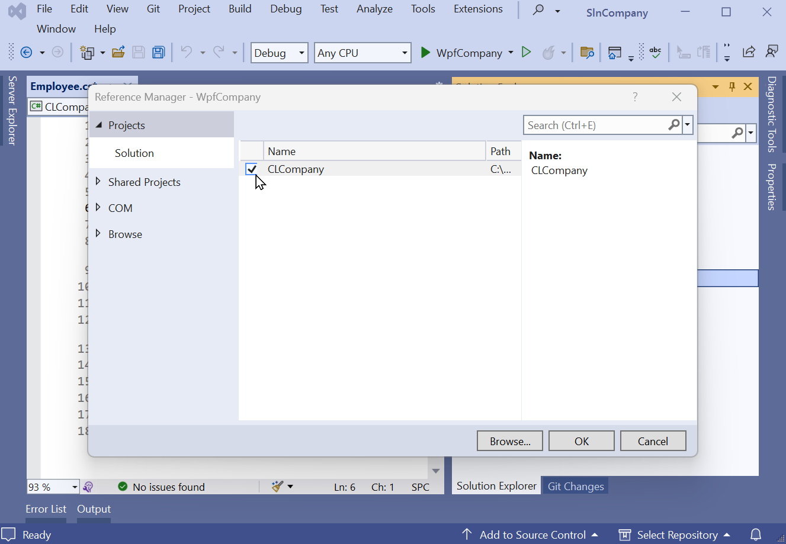
Stap 2: using toevoegen
Voeg tenslotte in elke C# file waar je de class library wil gebruiken een using directive toe:
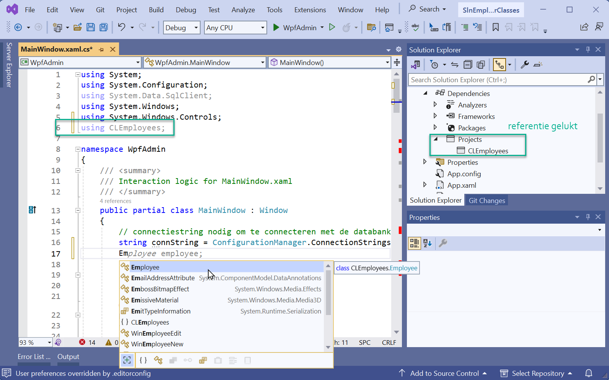
Het projecttype van de WPF application en de class library moet gelijk zijn (.NET8); je kan niet b.v. een .NET8 class library gebruiken in een .NET Framework project
Stap 3: code uitwerken
Je kan nu de klassen Employee en Job gebruiken in je hoofdproject.
voorbeeld 1: vullen lijst employees (MainWindow)
We schrijven een methode ShowEmployees(), die we oproepen in MainWindow():
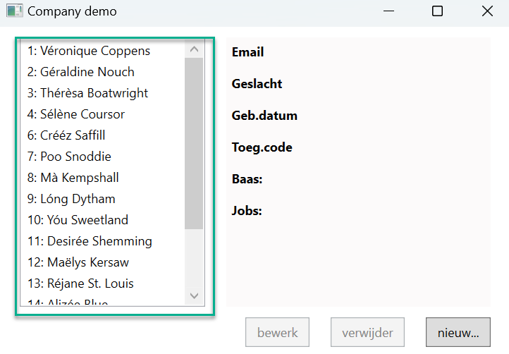
public MainWindow() {
InitializeComponent();
ShowEmployees();
}
public void ShowEmployees(int? selectedId = null) {
// wis lijst en labels
lbxResults.Items.Clear();
lblEmail.Content = lblGender.Content = lblBirthdate.Content = lblCode.Content = lblBoss.Content = "";
// laad alle werknemers in
List<Employee> allEmployees = Employee.GetAll();
foreach (Employee emp in allEmployees) {
lbxResults.Items.Add(new ListBoxItem() {
Content = $"{emp.Id}: {emp.FirstName} {emp.LastName}",
Tag = emp.Id, // onthoud de id in de Tag attribuut voor later
IsSelected = selectedId == emp.Id
});
}
}- merk op hoe
eenvoudig en kortonze code is dankzij de class library!
voorbeeld 2: ophalend details employee (MainWindow)
We schrijven een methode ShowEmployees(), die we oproepen in MainWindow():
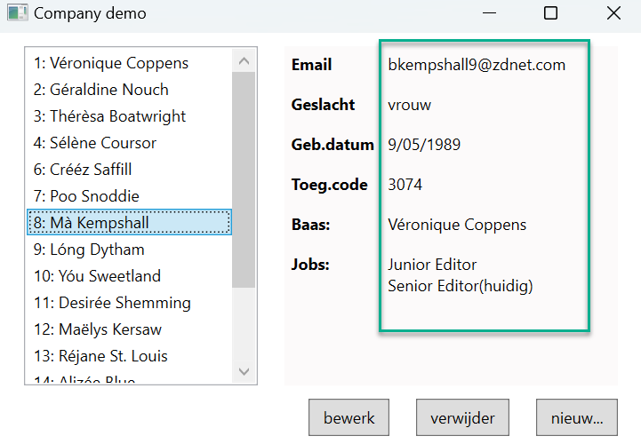
private void LbxResults_SelectionChanged(object sender, SelectionChangedEventArgs e) {
// vraag employee op en stel button states in
ListBoxItem item = (ListBoxItem)lbxResults.SelectedItem;
btnEdit.IsEnabled = item != null;
btnRemove.IsEnabled = item != null;
if (item == null) return;
Employee employee = Employee.GetById(Convert.ToInt32(item.Tag)); // haal de id weer op uit de tag
// toon details
lblEmail.Content = employee.Email;
lblGender.Content = employee.Gender == GenderType.Man ? "man" : employee.Gender == GenderType.Vrouw ? "vrouw" : "onbekend";
lblBirthdate.Content = employee.BirthDate.ToShortDateString();
lblCode.Content = employee.AccessCode == null ? "-" : employee.AccessCode.ToString();
lblBoss.Content = employee.Boss == null ? "-" : employee.Boss.ToString();
List<string> jobTitles = employee.Jobs.Select(j => j.JobTitle).ToList<string>();
txtJobs.Text = jobTitles.Count == 0
? "geen opgegeven"
: (string.Join(Environment.NewLine, jobTitles) + (employee.Jobs.LastOrDefault().EndDate == null ? "(huidig)" : " (gestopt)"));
}
- merk op dat nergens SQL code in je hoofdprogramma voorkomt, alles zit verborgen in de class library
voorbeeld 3: lijst bazen vullen (EmployeeNewWindow)
De code voor het vullen van de lijst bazen:
List<Employee> allEmployees = Employee.GetAll();
allEmployees.Sort((x, y) => x.LastName.CompareTo(y.LastName));
foreach (Employee emp in allEmployees) {
cmbBoss.Items.Add(new ComboBoxItem() {
Content = emp,
Tag = emp.Id // onthoud weer de id in een Tag attribuut
});
}
voorbeeld 4: nieuwe employee opslaan (EmployeeNewWindow)
De code voor het opslaan van de employee:
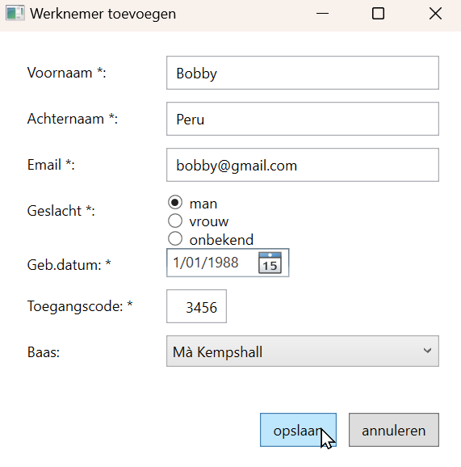
private void btnSave_Click(object sender, RoutedEventArgs e) {
// werknemer opslaan
int bossId = Convert.ToInt32(((ComboBoxItem)cmbBoss.SelectedItem).Tag); // haal boss id op uit Tag attribuut
Employee employee = new Employee() {
FirstName = txtFirst.Text,
LastName = txtLast.Text,
Email = txtEmail.Text,
Gender = rbnMale.IsChecked == true ? GenderType.Man : rbnFemale.IsChecked == true ? GenderType.Vrouw : GenderType.Onbekend,
BirthDate = (DateTime)datBirth.SelectedDate,
AccessCode = txtCode.Text == String.Empty ? null : (int?)Convert.ToInt32(txtCode.Text),
BossId = bossId == -1 ? null : (int?)bossId
};
employee.InsertToDb();
// herlaad hoofdvenster, en sluit dit venster
((MainWindow)Application.Current.MainWindow).ShowEmployees(employee.Id);
this.Close();
}
Code verbeteringen
Tot slot: multi-tier architectuur
Dankzij de class library is de toepassing verder opgesplitst in verschillende lagen met elk een eigen taak. Dit is de zgn. meerlagen- of multi-tier architectuur:
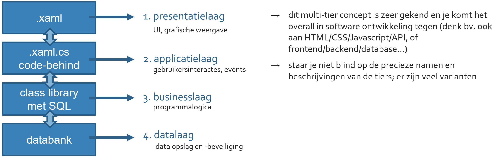Elke laag communiceert enkel met de laag erboven of eronder. Bijgevolg:
-
Geen SQL code buiten de class library
Alle communicatie met de databank moet via de class library gebeuren, en enkel daar mag SQL code voorkomen. De WPF windows bv. mogen nooit rechtstreeks de databank aanspreken. -
Geen WPF controls in de class library
Omgekeerd mag de class library, dus de businesslaag, niet rechtstreeks de XAML code, dus de presentatielaag, aanspreken. Daarom: geen WPF controls in de class library (zelfs niet als parameter!).